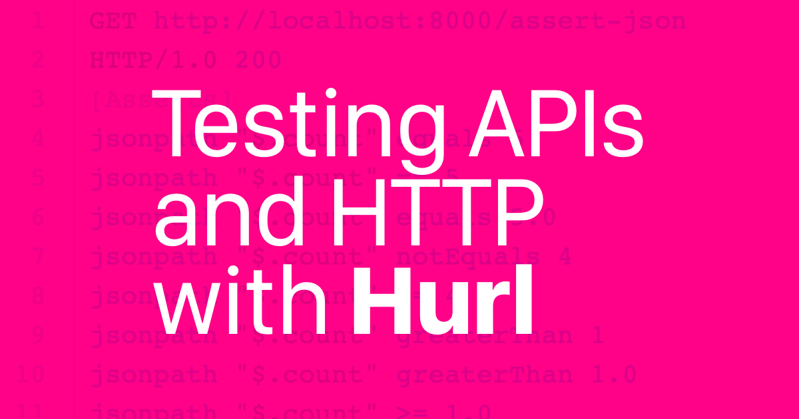

Presented by Rajiv Aaron Manglani during MIT IAP 2026.
Sponsored by MIT SIPB.
Tuesday, January 27, 2026 at 6-7:30pm, MIT 4-270 (Building 4, room 270).
Hurl is an open-source command line tool that runs HTTP requests defined in a simple plain text format. It can chain requests, capture values and evaluate queries on headers, body response, and certificates. Hurl is very versatile: it can be used for both fetching data and testing HTTP sessions. Hurl makes it easy to work with HTML content, REST / SOAP / GraphQL APIs, or any other XML / JSON based APIs. Hurl is written in Rust. Development is sponsored by Orange through their Orange Open Source program.
In this seminar, we will review the basics of Hurl including writing test files, running tests, and reviewing output reports. We'll explore how Hurl can be used for acceptance and integration testing of APIs and web applications.
If you plan on attending, please RSVP using the MIT SIPB form at https://forms.gle/662xn7sBfrguDAdh6.
For more information about this seminar contact: Rajiv Aaron Manglani, rajiv@alum.mit.edu.

See also: Other MIT SIPB IAP activities.